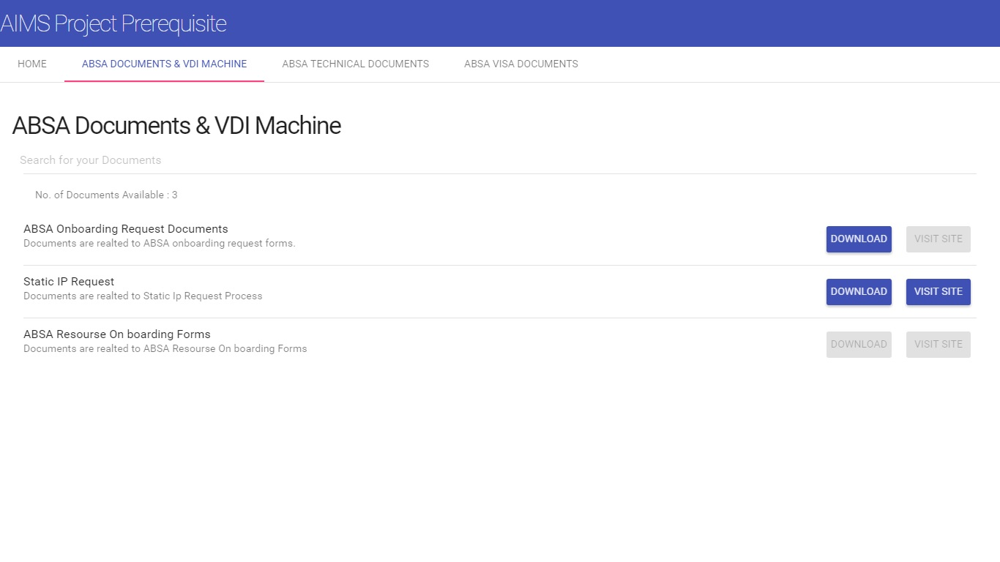
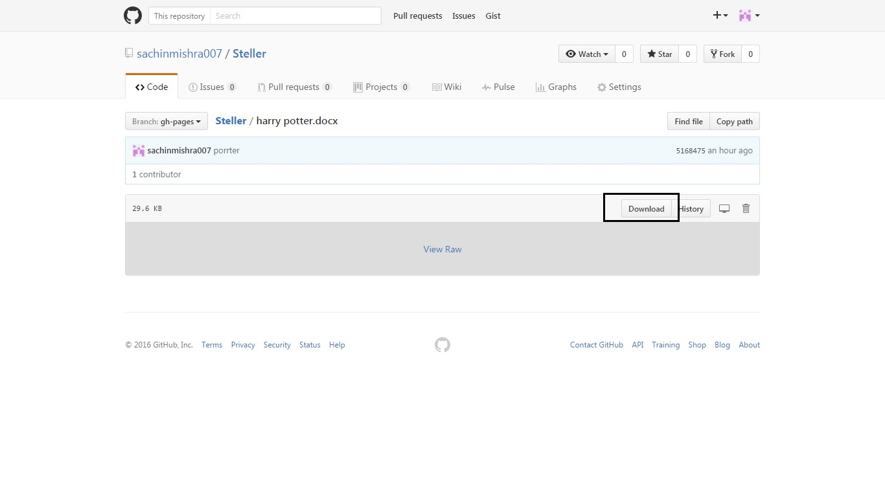

<md-dialog aria-label="Mango (Fruit)">
    <form ng-cloak>
        <md-toolbar>
            <div class="md-toolbar-tools">
                <h2>Instructions to Downlaod Files</h2>
                <span flex></span>
                <md-button class="md-icon-button" ng-click="cancel()">
                    <md-icon md-svg-src="AIMS.Image/close.svg" aria-label="Close dialog"></md-icon>
                </md-button>
            </div>
        </md-toolbar>

        <md-dialog-content>
            <div class="md-dialog-content">
                <h2>Git Hub File Download</h2>
                <p>
                    Step 1: Click on the download button of document which you would like to get.
                </p>

                

                <p>
                    Step 2: Click on the download button under Code section of Git hub portal.
                </p>
                
            </div>
        </md-dialog-content>

        <md-dialog-actions layout="row">
            <md-button href="http://en.wikipedia.org/wiki/Mango" target="_blank" md-autofocus ng-show="false">
                More on Wikipedia
            </md-button>
            <span flex></span>
            <md-button ng-click="answer('not useful')" ng-show="false">
                Not Useful
            </md-button>
            <md-button class="md-raised md-primary md-ink-ripple" ng-click="answer('useful')">
                Happy Working
            </md-button>
        </md-dialog-actions>
    </form>
</md-dialog>